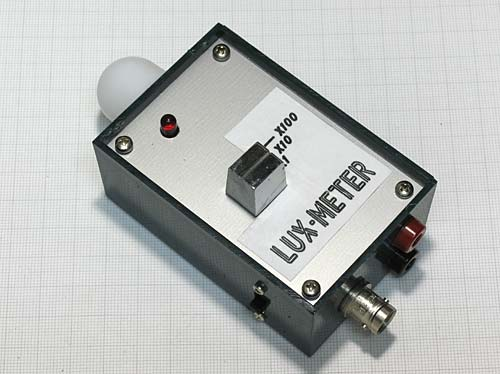
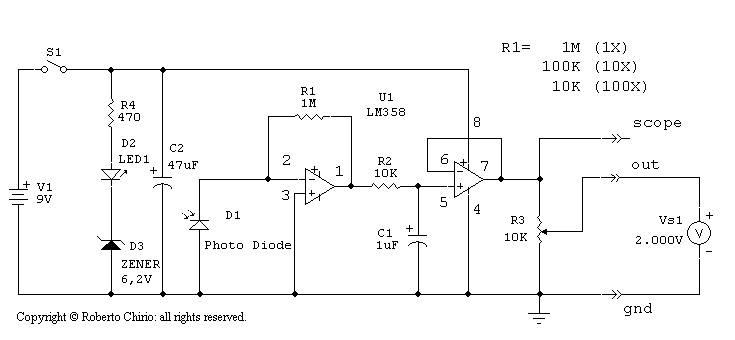
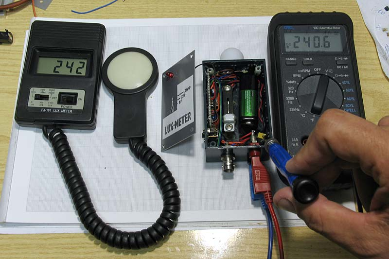
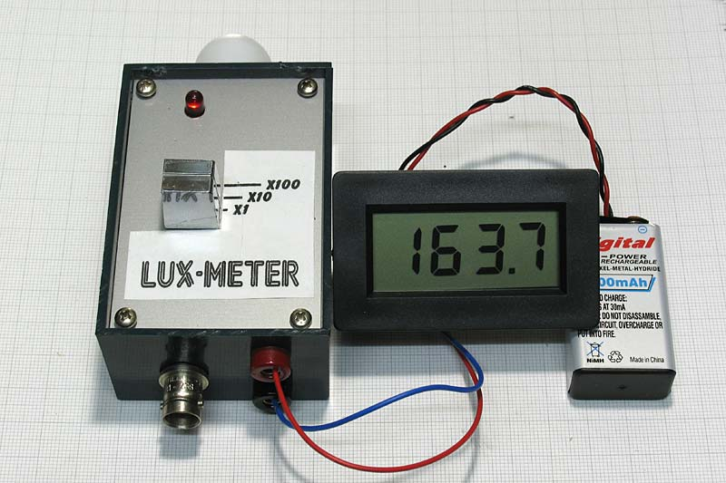
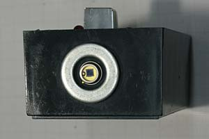
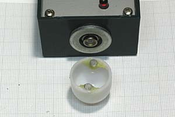
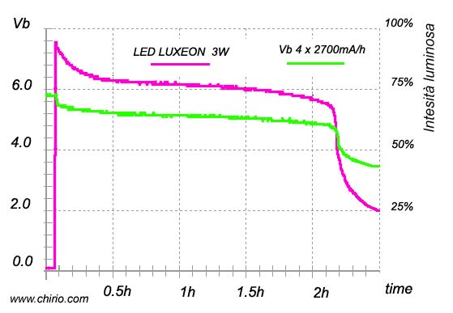

Measurements & laboratory
LUX - METER LIGHT-METER
Simple instrument with analog output suitable for relative illuminance measurements. "Do it yourself" by R.Chirio
Page index

August 2007
This project arose from the need to acquire a light flux with a digital oscilloscope, all to have in real-time the light intensity curves, relative to the various LED illuminator projects operating on batteries.
Similar instruments are not available on the market except at very high prices. They are generally Data Loggers for acquisitions with very long times.
By properly calibrating the output voltage value through a resistive divider, it's possible to have a precise correlation between mV and Lux. (A reference lux meter is required.)
Due to the simplicity of the circuit and the lack of optical filters on the sensor, it is not possible to have precise and calibrated measurements with various types of light, such as fluorescence, discharge and LED. The measurement is always relative even if repeatable.
Photodiode on silicon, suitable for making light measurement instruments, such as exposure meters, light meters and color temperature meters, is characterized by a wide range of input values with good current output linearity:
BPW20 (pdf 79K)
For info contact: info@chirio.com
ELECTRICAL CIRCUIT DIAGRAM

|
Material |
Where |
|
|---|---|---|
|
U1 |
● 1 integrated LM358 |
electronics store |
|
R1 |
● 1 resistor 1M/100K/10K ohm 1/4W 1% metal film |
electronics store |
|
R2 |
● 1 resistor 10K ohm 1/4W 1% metal film |
electronics store |
|
R3 |
● 1 trimmer 10K ohm cermet multiturn |
electronics store |
|
R4 |
● 1 resistor 470 ohm 1/4W |
electronics store |
|
C1 |
● 1 electrolytic capacitor 1-22uF 16V (see notes) |
electronics store |
|
C2 |
● 1 electrolytic capacitor 47uF 16V |
electronics store |
|
D1 |
● 1 photo diode BPW20 (see notes) |
electronics store |
|
D2 |
● 1 LED 5mm red |
electronics store |
|
D3 |
● 1 Zener diode 6.2 400mW |
electronics store |
|
S1 |
● 1 slide switch |
electronics store |
|
V1 |
● 1 Battery 9V |
electronics store |
|
● 1 switch 1 way 3 position (rotary or linear) |
electronics store |
|
|
● BNC connector |
electronics store |
|
|
● 9V battery connector |
electronics store |
|
|
● printed circuit board |
to be done |
|
Circuit description
Power supply with 9V battery, operation is good down to 6V.
The red LED diode signals power-on, the LED current is kept low to avoid draining the battery, the series Zener diode turns off the LED when the voltage drops below 7V, this to signal low battery.
The LM358 integrated circuit has the function of amplifying the Photo Diode signal. The constant-gain amplifier configuration allows us to have good linearity across the entire scale. To have a complete range of use across the entire illumination scale from 0 to 20000 lux it is necessary to use a three-position switch to replace the amplifier gain resistor. The three resistors must be of the 1% precision metallic film type.
The low pass filter at the output from the amplifier made of R2 and C1 serves to reduce impulses and noise and linearize the reading. This luxmeter was born from a need to capture slow luminous phenomena such as the decrease in luminous flux of the various LED lamps present on this site. Therefore keeping an R2 of 10K the C1 can take a value from 1 to 22uF. In the case of wanting to see fast waveforms related to pulsed light, typical of neon lamps at 50 Hz or neon with electronic ballast, or other non-filament lamps, I recommend a C1 of 10nF, a reading with oscilloscope is possible even without filter but the noise introduced could be high and should be evaluated case by case. A 1uF capacitor gives us a cutoff frequency of 10 Hz, a good value for use with a digital voltmeter, 2-3 readings/s.
The second stage of the LM358 is only a follower with gain 1 useful for decoupling the output.
On the output we find the multiturn cermet trimmer, which we should calibrate to have the right millivolt/Lux value. To have a linear operating range and not saturate the amplifier it is good to have maximum values not exceeding 1.5-2.0V.
The oscilloscope output is not affected by trimmer adjustment, this to take advantage of the full signal swing, useful for full-screen diagrams.
Realization
Building the LUX-METER requires knowledge of electronics, equipment and experience in electronic assembly is necessary.
No liability is accepted for damage to things and people and for improper use of the implementation.
Construction is easy, even without making the printed circuit board. Just use a small perforated board suitable to be mounted inside a box for electronic assemblies.
The sensor can be fixed externally on one side of the box and locked with some glue. The terminals bent inward and soldered to the cables.
Take some care in arranging the cables and switches and connectors, the eye wants its share too.
It is necessary to make a label for the position of the gain switch, on top we will write at the corresponding position: 1X 10X 100X

To calibrate the instrument you need a reference illuminance meter. The two sensors must be positioned in the same direction of the light source. (For convenience of the photo both are resting on the table, but the box with the circuit must be positioned vertically with the sensor facing up.)
The two sensors must be oriented toward the light source, use a light with tungsten filament, the light source must be as far away as possible so as to have parallel and vertical rays on both sensors and of equal intensity.
Adjust the R3 trimmer to have 1mV/Lux at the output. Verify the reading of values also on the 10X and 100X scales comparing them with the reference luxmeter.
Once calibrated using the three scales we can read values from 1 to 20000 lux. Even beyond if the reading instrument is a multimeter. 1.00Volt on the 100X scale corresponds to 100000 lux. (100000 lux are greater than summer sunlight.)

With the calibrated instrument it is also possible to use a 200mV full scale digital voltmeter. Everything can be assembled in the same box to have a single measurement instrument. It is good to keep the power supplies separate, or if you want to use just 1 9V battery be sure to have the negative in common.
The Luxmeter current draw is a few mA, as is the LCD digital voltmeter. Runtime with 1 common 9V battery exceeds 100 hours.
The BPW20 sensor is attached with a bit of adhesive, as is the iron washer. The iron washer is used to protect the photodiode from impact and to secure the diffuser dome.

The diffuser dome was recovered from a battery lamp with diffused light.
Two small magnets glued with wire, inside the dome, allow non-permanent fastening to the iron ring.
By removing the dome we can thus have maximum sensitivity for the sensor, when it is necessary to acquire weak light signals.

Connection to a digital oscilloscope.
To make long-term acquisitions of light flux we will connect the Scope output of the Luxmeter to a digital oscilloscope.
Excellent combination is to use the Hantek DSO2150 USB, which has a minimum time base of 1h/div thus being able to acquire on screen, phenomena lasting 10 hours.
Almost no branded Digital Oscilloscope has a time base with such low values, generally it stops at 5s/div.
Alternatively it is possible to use a USB multimeter and acquire the voltage values read from the Luxmeter, after that it will be possible to create a diagram using Excel.
The measurement should be done by bringing the cursor to 90% with full light, simply by moving the light source away or toward the light meter, then also act on 10X or 100X to attenuate a strong signal that could saturate the input signal.
The signal is saturated, when bringing the light source even closer, we don't get signal increases, in this case move the light source away to bring the maximum signal down by at least 20%.
The measurement of light in battery discharge must be done by covering the luxmeter and the light source with a box, this to avoid conditioning the measurement with ambient light.
{kind=link}
Small LED torch, under examination. Missing the dark box that shields the ambient light.
Example of LED lamp flux acquisition, correlated to battery voltage.

Flux curve as a function of battery discharge related to the 3W Luxeon powered at 2.16W 4x2700mA
It is noted that with a voltage of 4.0V the luminous flux is still 50%.
The batteries still warm had just been recharged, this explains the initial voltage of 5.8V and the initial light peak.
Roberto Chirio is available for consulting in the lighting engineering field.
Contact: info@chirio.com
© Roberto Chirio: all rights reserved.